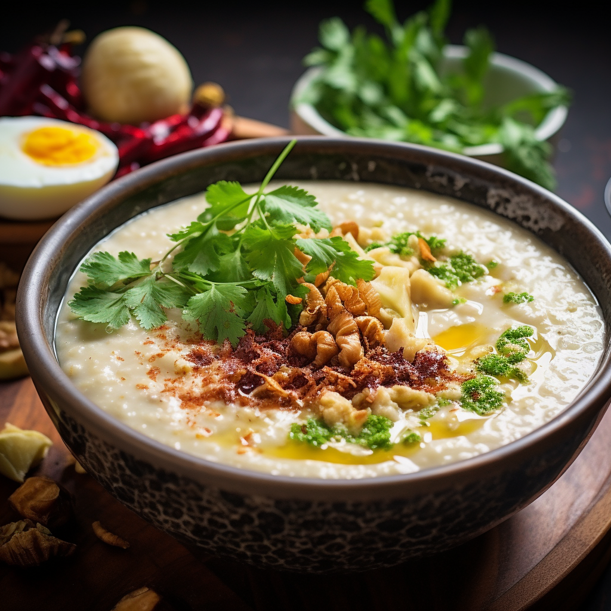

Bubur Sumptuousness
Dive into the realm of bubur, an Indonesian rice porridge that embraces simplicity and heartiness. Cooked to a smooth and creamy consistency, the bubur is embellished with a variety of savory condiments, such as shredded chicken, crispy shallots, sliced scallions, and a sprinkle of fried peanuts. The dish offers a gentle warmth that soothes the soul, making it a popular choice for breakfast or as a wholesome comfort food on rainy days.